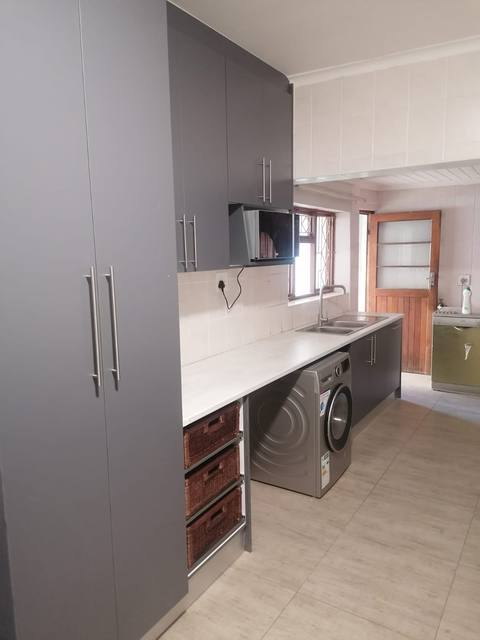

Renovation & woodworks in Salt River
Salt River is mostly terraced workers' cottages and small houses, with a growing number of rental units and live-work spaces. Space is tight, so every cupboard has to earn its place. We're often asked for space-saving kitchens for small cottages, hard-wearing cupboards for rental units, and security doors, gates and burglar-proof front doors.
Examples of our work
From our projects across Cape Town.




Working in Salt River
Salt River sits between Woodstock and Observatory and grew around the railway workshops and factories, so its streets are lined with small workers' cottages and semis on tiny plots. Rooms are compact and ceilings are lower than in the grander Victorian suburbs nearby. Many homes are now rented out or used as live-work spaces, and some old factory buildings have become offices. Here the best results come from built-ins made to measure: a cupboard that fills an alcove to the ceiling, or a kitchen planned to the centimetre.
Kitchens · Built-in cupboards · Doors & garage doors · Furniture · Decks · Renovations →
Questions from Salt River
Do you do small jobs in Salt River?
Yes. A single wardrobe, a new front door or a kitchenette for a rental unit are all normal jobs for us, and the quote process is the same: free and fixed.
How do you fit a kitchen into a small Salt River cottage?
We measure every wall and opening, then plan tall units, corner storage and slim appliances so nothing is wasted. Everything is built in our workshop and fitted in a day or two.
Can you make cupboards that stand up to tenants?
Yes. For rentals we use hard-wearing board, solid hinges and runners, and finishes that are easy to clean and repair.
Which cupboard doors work best in small rooms?
Sliding doors usually work best where space in front of the cupboard is limited. In very narrow rooms, shallower units with hinged doors can be the better option; we advise on site.